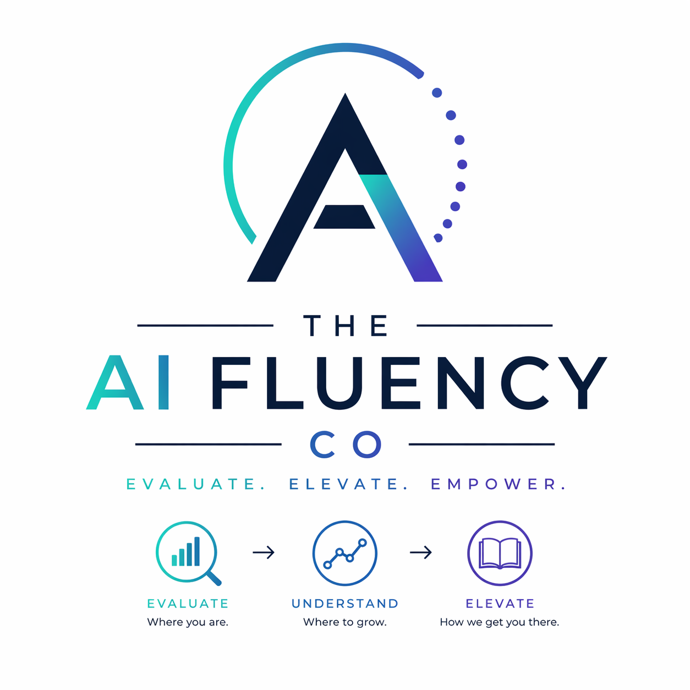
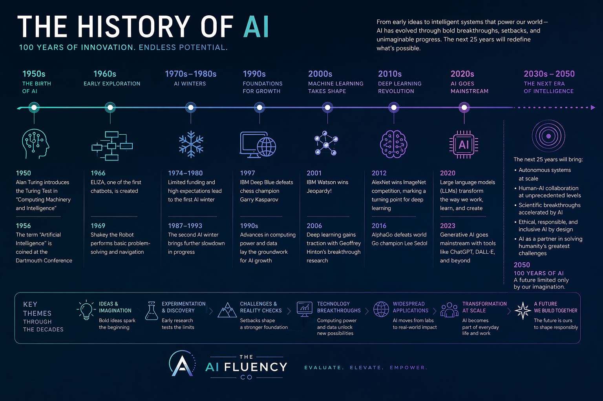

Understand the technology
Teams learn what AI can do, where it fails, and how to ask better questions of the tools they use.
Evaluate. Elevate. Empower.
The AI Fluency Company helps organisations understand where they are, what to build next, and how to adopt AI with confidence, governance, measurable return, and practical business value.

What AI fluency means
Teams learn what AI can do, where it fails, and how to ask better questions of the tools they use.
AI becomes part of everyday workflows, not a novelty. The focus is productivity, judgement, and measurable value.
Policies, risk controls, data readiness, and leadership alignment keep AI adoption useful, ethical, and scalable.
How we got here

Who we are
The AI Fluency Company was created to help leaders and teams move past panic, novelty, and vague promises. We translate AI into plain language, practical workflows, and responsible decisions that make sense for the organisation in front of us.
Our work sits at the intersection of training, strategy, governance, ROI, and change. That means we help you understand what AI can do, decide where it belongs, and build the systems to use it well.
Governance & ROI
We consult on AI management systems and help organisations prepare for ISO/IEC 42001 implementation with our ISO accreditation partner.
We track the newly gazetted South African AI policy direction and help leaders understand what is coming, what it may mean, and how to prepare responsibly.
We help put measurement systems in place so each AI use case can be monitored for value, adoption, efficiency, risk, and return on investment.
How we help
Build shared language, tool confidence, and a grounded understanding of what AI can and cannot do.
Best for teams starting or standardising their AI journey.Turn scattered experiments into priorities, use cases, ownership, and a roadmap that leadership can act on.
Best for organisations ready to move from interest to execution.Assess readiness, governance, data, opportunities, risks, and likely business returns so AI adoption can scale safely.
Best for leaders balancing innovation with accountability.Build policies, roles, controls, and implementation pathways aligned to responsible AI management and certification readiness.
Best for organisations preparing for formal AI governance expectations.Start here
The assessment takes about five minutes and gives you an instant score, dimension breakdown, recommended next step, and a report by email.
Open full assessmentNext step
Once you have your score, book a debrief to unpack the results and decide what to do next.